铁柱AGI · 5/60
中文长文精选
用 Grok Bot (xAI's AI assistant that comes with its own computer) 跑业务流，常踩的坑主要是账号绑定、本地与云端搞混、权限越界以及例程空跑，还要防着验证码、接口失效和额度 (quota (how much use your plan allows))消耗。要是多角色职责没拆清，Bot 还会互相抢占上下文。
这里整理了社区实测跑通的 15 篇长篇实践，覆盖入门起步、自媒体运营、工程研发、电商生活和组织编排五大模块，可以直接对照查阅。
| 主题分类 | 文章标题 | 核心业务场景 | 关键机制与工具 |
|---|---|---|---|
| 入门与基础 | 《万文长｜Grok Bot 从零入门第一次上》 | 账号开通与首条任务合同 | Linux 云电脑、Take over 接管、Skill (a saved how-to the bot can reuse) 沉淀 |
| 入门与基础 | 《如何在一个小时内深入使用 Grok Bot》 | 规范化巡检与做事方法固化 | 验收标准编写、Teach a task 录制、例程去重 |
| 入门与基础 | 《10 条必备经验，让你的 Grok Bot 变得更好用》 | 多 Bot 环境治理与防中断 | 收件箱分流、CLI 调度、Wake on Done、App Nap 禁用 |
| 自媒体运营 | 《用Grok Bot搭建自媒体团队：保姆级教程》 | 5 岗位全流程内容流水线 | 7 层共享目录、voice.md 约束、全链路人工闸 |
| 自媒体运营 | 《做自媒体怎么用好 Grok bot》 | 结构化选题库与爆款拆解 | HKRR 框架、6 组硬字段校验、Notion (a notes and database app) 状态流转 |
| 自媒体运营 | 《如何把 Grok Bot 接入你的微信？》 | 移动端日常指挥入口打通 | 微信 ClawBot 插件、iLink 长轮询、Webhook (a web address that triggers an action when called) 唤醒 |
| 自媒体运营 | 《把自己的推文做成个人画像网站》 | 历史发帖提炼与网站生成发布 | 4 角色文件流转、原文依据核对、静态站点生成 |
| 自媒体运营 | 《微信里说一句，就能运营X》 | 5 专员路由与一句话微信分发 | 角色持久路由、主 Bot 调度、失败不代写 |
| 工程研发 | 《工程师如何用好 Grok bot?》 | 迷你研发舰队与持续审查 | 5 研发 Bot + 1 运营 Bot、Notion 数据库、截图闭环 |
| 工程研发 | 《一天几百个 PR 有什么意义？》 | 多线并发研发与分级代码审查 | 九类工作拆解、PR 风险分级放行、工程 Harness |
| 电商与生活 | 《Grok Bot 应用指南实操案例》 | 闲鱼资料板与图文多场景交付 | 真实成色隔离、SVG 源文件、可交互 HTML 资料板 |
| 电商与生活 | 《用 Grok Bot 做跨境电商的实战分享》 | 亚马逊买家视角前台运营 | 买家号登录、Alexa 问答调研、调价待批清单 |
| 团队与组织 | 《万字长文｜Grok Bot 从入门到精通》 | 从单兵岗位到电商运营矩阵 | 岗位说明书八要素、/workspace 交接、审批规则 |
| 团队与组织 | 《从一个 Bot 到一整个组织》 | 本地 Agent (an AI that takes steps on its own to finish a task) 资产迁移与 1+N 架构 | 本地 Skill 导入、飞书 CLI、GBrain 知识库 |
| 团队与组织 | 《零基础搭建全自动化Agent团队》 | 爆款多平台采集与全天候协作 | 关键词成功率回溯、反向访谈提示词 (prompt (the instruction you give the AI))、飞书多维表格 |
搭建前先把下面这段提示词发给主 Bot，让它协助梳理岗位边界与执行目录。
我打算参考以下业务场景搭建一套 Grok Bot 工作流：【填入具体业务目标】。
请按以下步骤帮我拆解：
1. 列出该流程所需的 Bot 岗位清单，明确每个角色的输入文件、交付成果和绝对禁止动作。
2. 在 /workspace 下为我规划一套清晰的目录结构，规定上下游交接的文件格式。
3. 标出涉及外部发信、数据修改、敏感登录或支付的环节，单独列出必须等待人工审批的节点清单。
4. 给出该流程第一步的测试提示词，明确要求未确认信息标注为待确认，严禁编造数据。入门上手与基础机制
万文长｜Grok Bot 从零入门第一次上
来源：万文长｜Grok Bot 从零入门第一次上
作者：Today🦘 @TodayKan 桌面端绑定入口只在初始页出现，绑定后无法迁移。遇到网页登录，直接用 Take over 手动输入密码接管。
长期规则写进描述，临时要求放对话。没提供的信息标为待确认，切断瞎猜习惯。
写第一条任务要理清这五项。
- 目标与材料
- 边界与交付
- 人工确认节点
如何在一个小时内深入使用 Grok Bot
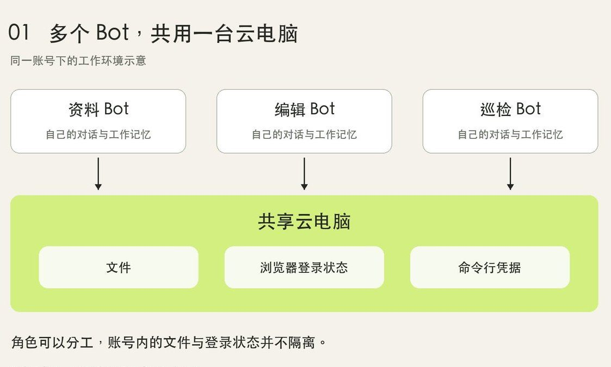
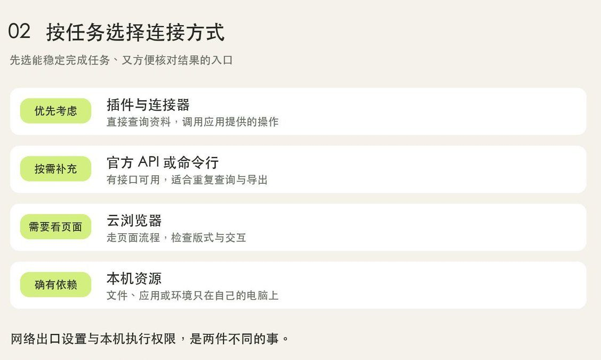
巡检任务统一在/workspace/site-check/ 保存报告。报告必须记下链接和检查时间，存下截图证据，并把页面事实与推测分开。固化日常技能 (skill (a saved how-to the bot can reuse))按两步走。
- 用 Teach a task 录制浏览器操作生成草稿。
- 人工补齐缺失数据处理和审批边界。
平时巡检坚持无新异常只存记录不弹通知，省额度也避免通知疲劳。
10 条必备经验，让你的 Grok Bot 变得更好用
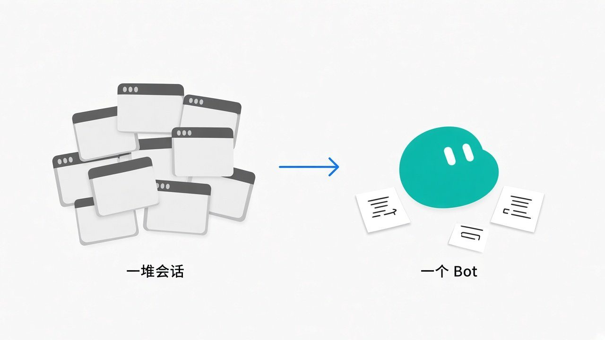
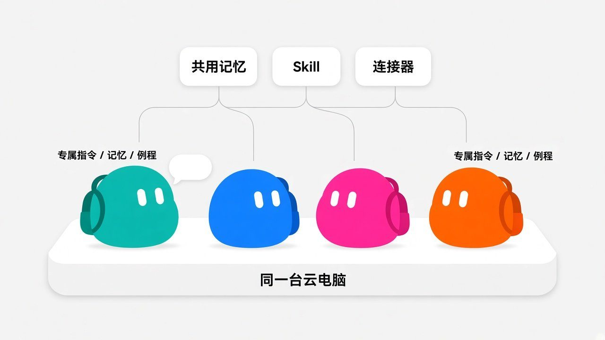
所有 Bot 共用同一台云电脑，单靠新建 Bot 无法实现权限隔离。逻辑固定的定时监测任务，改用纯脚本或命令行承接更省额度。长任务可以用 Webhook 配合 Wake on Done 唤醒。分流用收件箱 Bot 当总闸，按类型分配给对应角色。
本地休眠会导致例程断连，修改 macOS 的 pmset 并关闭 App Nap 就能解决。
自媒体运营与个人 IP
用Grok Bot搭建自媒体团队：保姆级教程｜Adrian Punk
在云电脑 /workspace/content-team/ 建 7 层目录，5 位专员按流水线顺次流转。
- 情报侦察员
- 选题策划师
- 内容主笔（写作只能依赖已批准的 Brief 和
voice.md） - 事实编辑
- 数据复盘师
安全上设定严格红线，全链路必须人工把关。
- 设置中直接关闭本地电脑执行权限
- 每个 Bot 描述焊死要求，严禁擅自发帖、点赞与回复
- 账号发布键与敏感登录全部锁死在人工环节
做自媒体怎么用好 Grok bot｜Kin
来源：做自媒体怎么用好 Grok bot
作者：Kin @KinGao476942 适合带产品找冷启动流量、常缺选题的创作者。
- 用 Bot 建立 Notion 选题库，配齐六组硬字段（来源永久链、公开数据和作者分层，以及适合理由、动机拆解与缺失标注）。找不到数据必须标注「未找到」。
- 按 HKRR 框架解构爆款，重点拆解快乐、知识，以及共鸣和节奏感四个维度。
- 只借鉴传播结构而不照搬文字，最终发布键死死控在自己手中。
如何把 Grok Bot 接入你的微信？保姆级新手指南来了（附详细提示词）｜Kin
来源：如何把 Grok Bot 接入你的微信？保姆级新手指南来了（附详细提示词）
作者：Kin @KinGao476942

想在手机随时调度云电脑 Agent，用微信 ClawBot 插件就能打通，部署只需三步：
- 把整理好的提示词发给主 Bot。
- Bot 在云电脑通过 iLink 协议写脚本，建好「微信下旨入口」Webhook。
- 在加密弹窗填密钥并扫码绑定。
通信与容错按这三条标准验收：
- 走出站长轮询，免公网 IP 和内网穿透。
- 严格限制 Bot 仅纯文本回复。
- 提示词预设 错误码 -14 自动重连。
把自己的推文做成个人画像网站, 用 Grok Bot 从分析特点到上线分享保姆级教程
来源：把自己的推文做成个人画像网站, 用 Grok Bot 从分析特点到上线分享保姆级教程
作者：蓝哥AI @0xlangeai
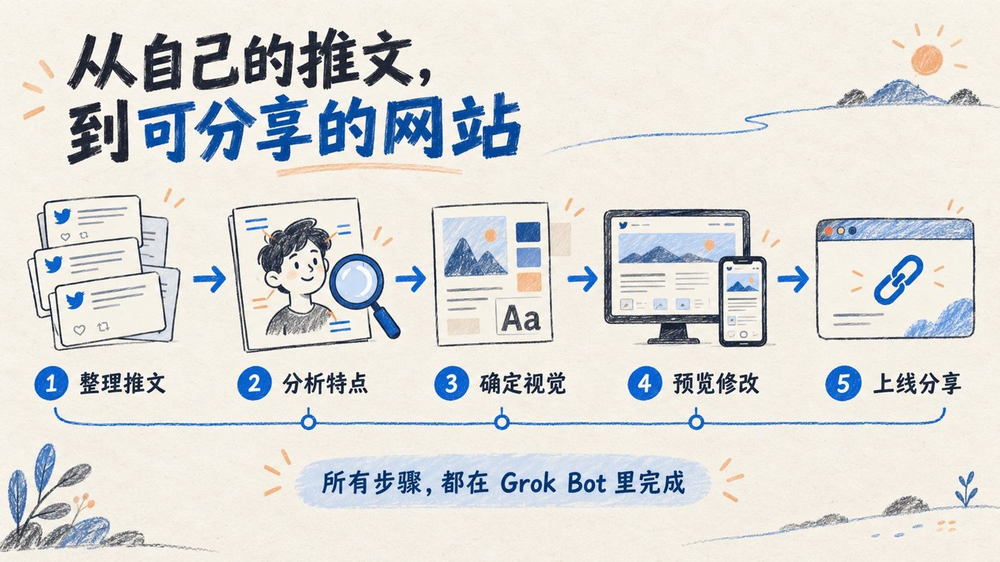
在项目群聊拉入四个 Bot，通过共享云电脑里的 Markdown (a simple way to format text with symbols) 文件接力流转：- 推文整理员抓取近 90 天内容存为
tweets.md。 - 画像分析师提炼 3 到 5 个特点写入
profile.md。 - 设计师提供双栏排版方案
design.md。 - 工程师编写代码并反馈多端预览。
分析师每个风格判断都必须附带推文原文链接与时间戳，每个节点由人工校正偏差后再放行。
微信里说一句，就能运营X：我的 5 个 Bot 模板公开了
来源：微信里说一句，就能运营X：我的 5 个 Bot 模板公开了
作者：Hardy Chen @Chchenhao0129
这套玩法打通了微信 ClawBot 插件，微信发一句话，主 Bot 就能自动分派任务并回传短推草稿。
5 套 Bot 模板覆盖全链路。
- 情报总监
- AI新闻雷达
- 推文二创
- 短推成稿
- X 数据复盘
- 路由分发逻辑完全封装在主 Bot 内部，用初始化提示词记录账号定位与专员 ID。
- 专员任务卡死必须如实报告失败原因，严禁主 Bot 私自代写冒充。
工程研发与代码协同
工程师如何用好 Grok bot?
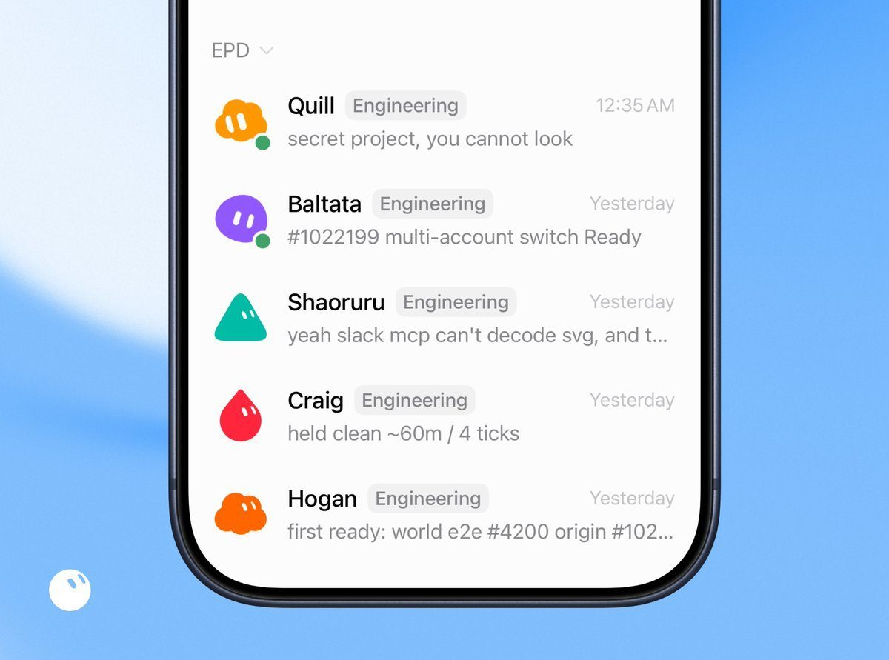

SpaceXAI 团队配置了 5 个研发 Bot（分管移动端、桌面端与 CI/CD 基建 Harness）与 1 位负责开会复盘的运营 Bot Jenny。
- 自动排查：Bot 自主调起 Cloud Agent，每 30 分钟轮询共享 Notion 数据库排查 CI 报错与合并冲突。
- 分级放行：高置信小改动自动合并，疑难问题交人工复核。
- 闭环验收：强制要求交付改动前后的真实对比截图。
一天几百个 PR 有什么意义？
来源：一天几百个 PR 有什么意义？我照着 SpaceXAI 工程师 Lauren（@poteto）的九类清单，把自己的活拆了一遍
作者：Mai Yang @MaiYangAI
面对单日合并上百个 PR 的争议，工程师把活拆成了涵盖性能、Bug 修复、重构、工具链与新特性的九类清单。
平时别盲目刷提交数，要把精力放在输入约束与输出校验两端。作者开发 ContextEcho 时，半年 1020 次提交也只有 18 次 PR。
改动放行按风险等级分流，杜绝虚荣指标。
| 改动风险级别 | 审查与放行机制 | 人工与 Agent 职责分工 |
|---|---|---|
| 低风险任务 | 结合测试用例放行 | 由代码审查 Agent 自动审核放行 |
| 核心与高风险任务 | 人工把关定方向 | 人工负责定方向、定验收标准和实际体验 |
电商经营与日常实操
Grok Bot 日常实操案例｜Miles Ma
来源：Grok Bot 应用指南实操案例：闲鱼上架、小红书做图、找工具、做短视频、整理收藏
作者：Miles Ma @miles_mazy
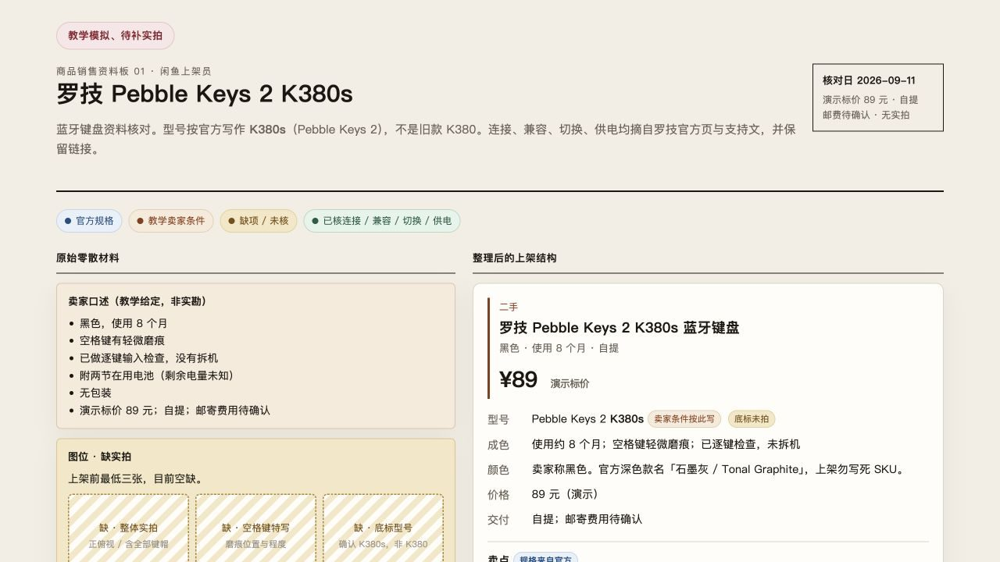
 作者把交付升级成网页资料板和矢量图，跑通了 5 个场景。
作者把交付升级成网页资料板和矢量图，跑通了 5 个场景。
- 闲鱼：拆开真实成色与官网参数，给带补图清单的双栏资料板。
- 小红书：批量做 6 张同色卡片，交 SVG 源文件。
- 视频：做可交互魔方网页，录剪为 51 秒带配音短片。
- 收藏：把推文转成 Markdown 素材库。
想防翻车，提示词里必须强制约定「未提供的信息一律标为待确认」，成色才不会被夸大。
用 Grok Bot 搭建亚马逊团队｜Zach
来源：用 Grok Bot 做跨境电商的实战分享，从 0 到 1 搭建起一整个亚马逊团队
作者：Zach @1999Zach22

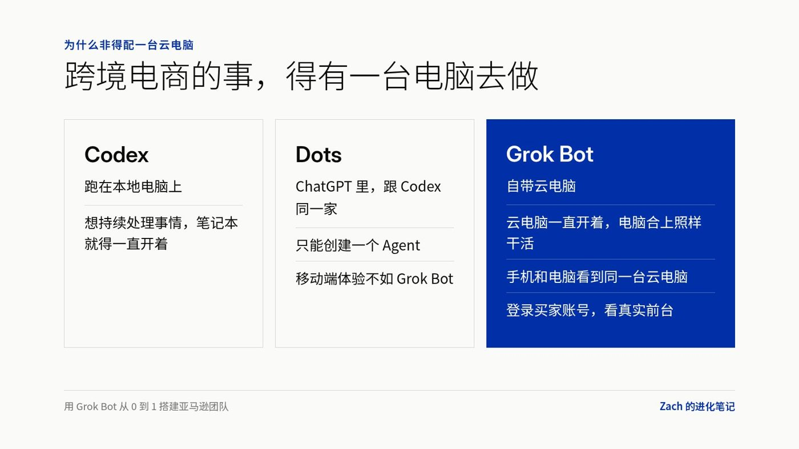
商业接口数据滞后，作者用云电脑浏览器登买家号，搭出**「1 船长 + 12 岗位」**架构，日常只跟船长对接。巡检 Bot 每天模拟买家跑这几项。
- 检查 Listing 变体与主图
- 监控竞品价格
- 向前台 Alexa for Shopping 提问摸推荐逻辑
权限底线是明令禁止广告 Bot 写入后台或改出价，调价与刊登全走待批清单人工确认。
团队编排与组织协同
渐进扩编
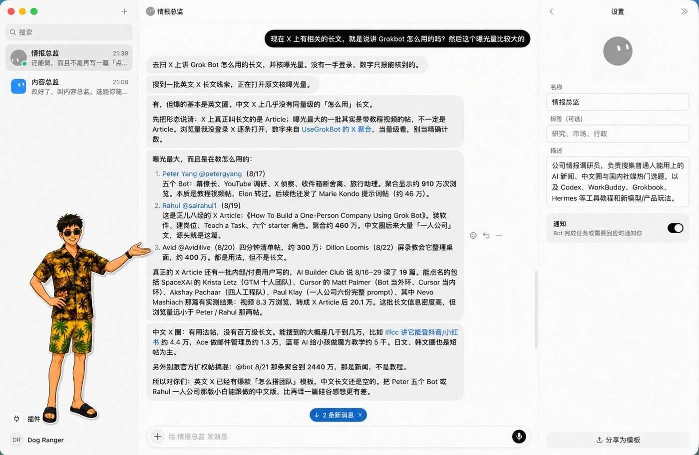
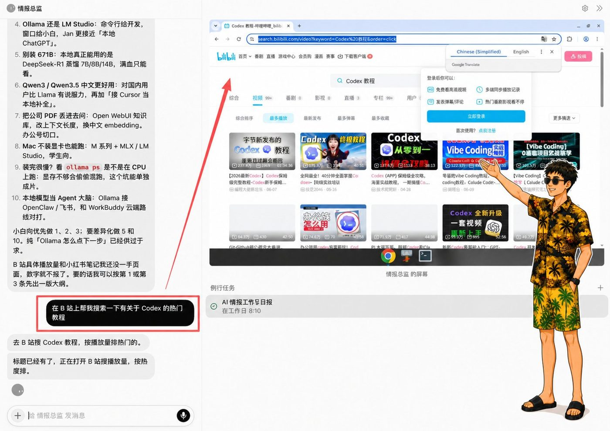
两名 Bot 借/workspace 传文件。岗位说明书定好八项要素，明确负责结果、工作步骤与验收标准，设好人工审批点。防过早设空岗，扩编分三步：- 单任务跑通
- 沉淀为技能
- 分工稳定建新 Bot
接驳分层
来源：从一个 Bot 到一整个组织，Grok Bot 的进阶用法分享：本地电脑、AI 分工和知识库怎么接起来
作者：Zach @1999Zach22
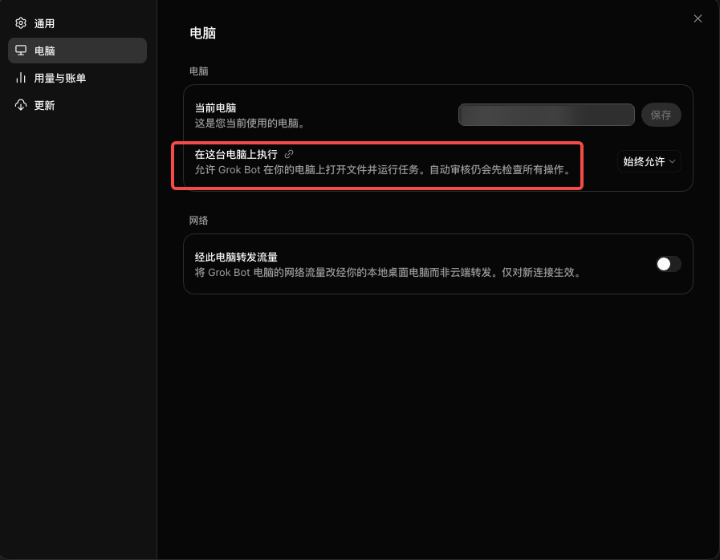
 本地 Claude/Codex 用 Plan 模式磨好 SOP 同步云电脑。推「1+N」单入口防群聊烧 token；飞书 CLI 交付批注；接 GBrain 知识库。关键动作以待批清单收尾：
本地 Claude/Codex 用 Plan 模式磨好 SOP 同步云电脑。推「1+N」单入口防群聊烧 token；飞书 CLI 交付批注；接 GBrain 知识库。关键动作以待批清单收尾：
| 业务类型 | 模型级别 |
|---|---|
| 基础清洗与排版 | 默认模型 |
| 核心战略归因 | 高级模型 |
自动化流水线
来源：零基础搭建全自动化Agent团队，Grok Bot从开通到多AI协作全流程【万字长文】
作者：xilo @xilo2991
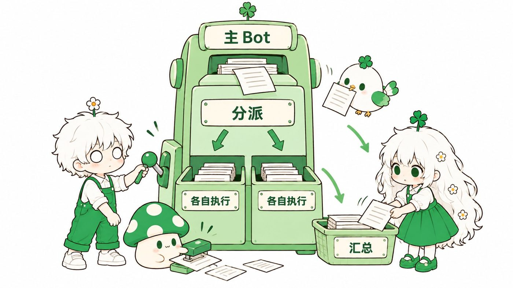
主 Bot 反向访谈定配置。后台跑粗活、人工错位批量审保稳定。24 小时流水线分四步走：- 梳理检索与落库
- 模拟检索小红书、B站和 YouTube
- 关键词周度淘汰入多维表格
- 补齐选题与撰稿
Source: https://bot.fmcat.top/cases/cn